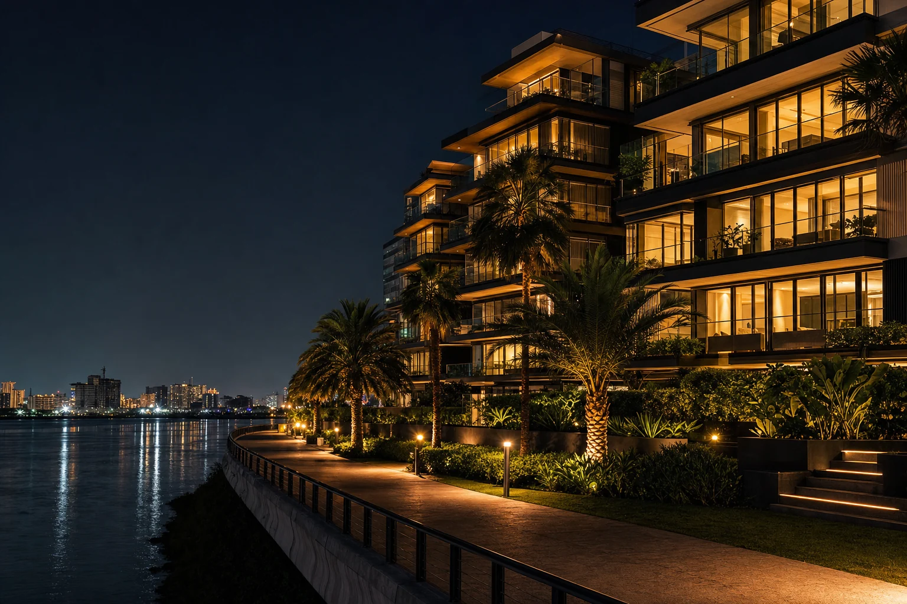
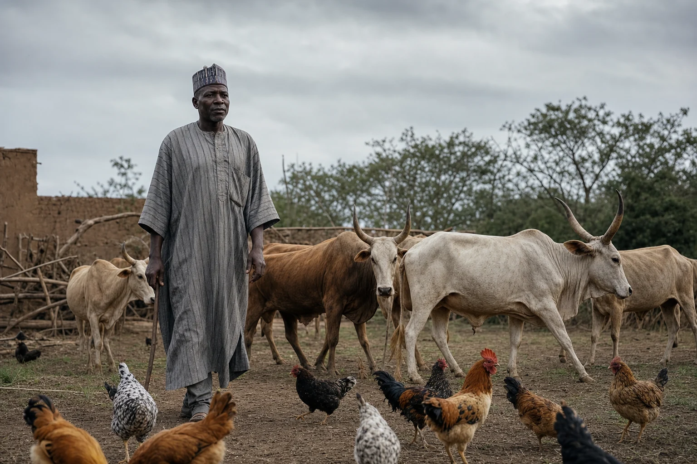

Our Companies

Investment Mandates
Technology
Productivity, connectivity and economic participation.
Energy & Infrastructure
Essential assets supporting long-term development.
Hospitality & Logistics
Mobility, commerce and growing markets.
Strategic Investments
Select acquisitions and special opportunities.